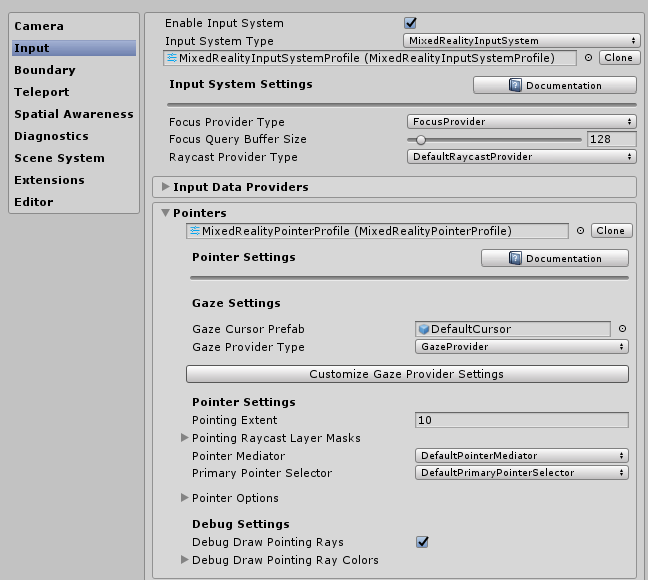
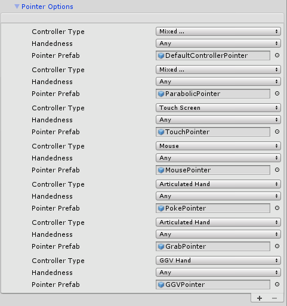
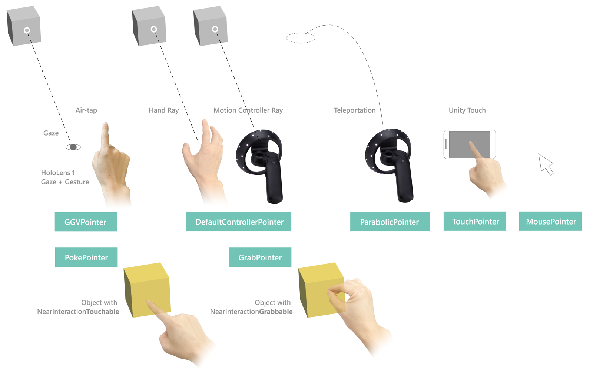
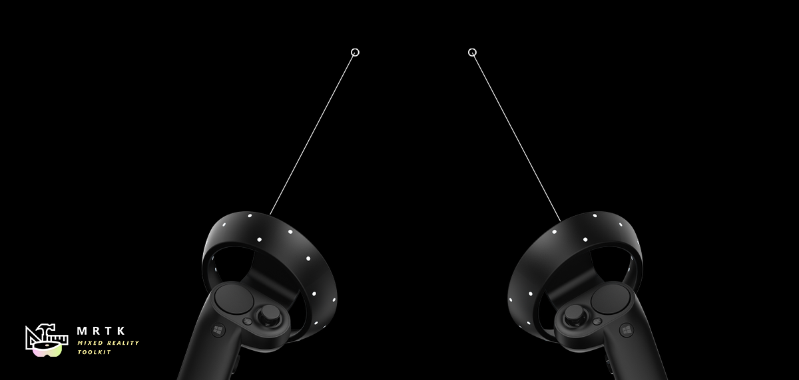
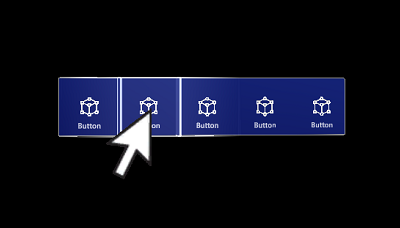

Pointers (指针)

This article discusses how to configure and respond to Pointer input in practice, compared to Pointer Architecture
与 Pointer Architecture相比，本文讨论了在实践中如何配置和响应Pointer 输入。
当检测到新控制器(controller)时，将在运行时自动实例化pointers。一个控制器可以连接多个pointer。例如，使用默认的pointer profile，Windows Mixed Reality控制器分别获得一条线和一个抛物线形的pointer，分别用于常规选择和传送。
Pointer 配置
Pointers通过MixedRealityPointerProfile 配置为MRTK中的输入系统的一部分。此类profile在 MRTK Configuration inspector中分配给MixedRealityInputSystemProfile
。pointer profile确定光标，运行时可用的Pointers类型以及这些pointers如何相互通信来确定哪个pointer处于活动状态。
Pointing Extent - 定义pointer可以与GameObject交互的最大距离。
Pointing Raycast Layer Masks - 这是LayerMasks的优先数组，用于确定任何给定Pointer可以交互的GameObjects以及尝试交互的顺序。这对于确保pointer最先与场景对象中UI元素交互可能很有用。 
Pointer 选项配置
默认的MRTK Pointer Profile配置包括以下pointer类和现成的关联预制体。在运行时可用于系统的pointer列表在Pointer profile的Pointer Options下定义。开发人员可以利用此列表重新配置现有的Pointers，添加新的Pointers或删除其中一个。

每个Pointer条目由以下数据定义：
Controller Type - pointer对其有效的一组控制器
- 例如，PokePointer 负责用手指“戳”对象，并且默认情况下标记为仅支持全关节手控制器类型。仅当控制器可用时才实例化Pointers，特别是Controller Type 定义了可以使用此pointer预制体可以与哪些控制器进行创建。
Handedness - 允许仅针对特定手（左/右）实例化pointer
Note
将Pointer条目的 Handedness 属性设置为None ，可以有效地将其从系统中禁用，这是从列表中删除该Pointer的替代方法。
- Pointer Prefab - 当控制器匹配指定的控制器类型且handedness开始被追踪时，将实例化此预制体。
可能有多个pointers与一个控制器关联。例如，在默认 HoloLens 2 profile 中，全连接手控制器与PokePointer, GrabPointer 和DefaultControllerPointer（即手部射线）相关联。
Note
MRTK在Assets/MixedRealityToolkit.SDK/Features/UX/Prefabs/Pointers中提供了一组pointer预制体。如果包含Assets/MixedRealityToolkit.SDK/Features/UX/Scripts/Pointers 中的pointer脚本之一或任何其他实现IMixedRealityPointer的脚本，就可以构建新的自定义预制体。
默认 pointer 类
下列类是现成可用的 MRTK pointers，这些类已在上面概述的默认 MRTK Pointer Profile 中定义。在Assets/MixedRealityToolkit.SDK/Features/UX/Prefabs/Pointers 下提供的每个pointer预制体都包含这些pointer组件之一。

Far pointers
LinePointer
LinePointer 是基本的pointer类，它从输入源（即控制器）沿pointer方向绘制线条。通常，诸如ShellHandRayPointer的子类和teleport pointers会被实例化并利用（它也画线来指示传送将在哪里结束），而不是这个主要提供公共功能的类。
对于Oculus，Vive和Windows Mixed Reality等运动控制器，其旋转将与控制器的旋转相匹配。对于如 HoloLens 2全关节手之类的其他控制器，其旋转与系统提供的手部pointing pose 相匹配。
ShellHandRayPointer
ShellHandRayPointer 的实现从LinePointer扩展而来，被用作MRTK Pointer Profile 的默认设置。 DefaultControllerPointer 预制体实现了ShellHandRayPointer 类。
GGVPointer
GGVPointer也称为Gaze/Gesture/Voice (GGV) pointer，主要通过凝视和Air Tap或注视和语音选择交互来为HoloLens 1型样式和点击交互赋能。GGVpointer的位置和方向由头部的位置和旋转来驱动。
TouchPointer
TouchPointer 负责处理Unity Touch输入(即触摸屏)。这些是'far interactions'，因为触摸屏幕的动作会将射线从相机投射到场景中可能较远的位置。
MousePointer
MousePointer为远距离互动提供了一个屏幕，可以使用世界射线，但适用于鼠标而不是触摸。
Note
默认情况下，MRTK中不提供鼠标支持，但可以通过向MRTK输入配置文件添加类型为MouseDeviceManager的新Input Data Provider来启用鼠标支持并将 MixedRealityMouseInputProfile分配给data provider。
Near pointers
PokePointer
PokePointer 用于与支持 “near interaction touchable”的游戏对象进行交互。这些游戏对象具有附加的NearInteractionTouchable脚本。对于UnityUI，此pointer将查找NearInteractionTouchableUnityUI。PokePointer使用SphereCast确定最接近的可触摸元素，并用于为可按下的按钮等事物赋能。
When configuring the GameObject with the NearInteractionTouchable component, make sure to configure the localForward parameter to point out of the front of the button or other object that should be made touchable. Also make sure that the touchable's bounds matches the bounds of the touchable object.
当使用NearInteractionTouchable组件配置GameObject时，请确保将localForward 参数配置为指向按钮或其他可触摸的对象的前面。还要确保可触摸对象的 bounds 匹配可触摸对象的边界。
有用的 Poke Pointer 属性:
- TouchableDistance: 可触摸表面可以被互动的最大距离
- Visuals: 用于渲染指尖视觉效果(finger tip visual)的游戏对象（默认情况下，环在手指上）。
- Line: 从指尖到活动输入表面绘制的可选线。
- Poke Layer Masks - 优先排列的LayerMask数组，用于确定pointer可以与哪些游戏对象进行交互以及尝试进行交互的顺序。请注意，GameObject还必须具有
NearInteractionTouchable组件才能与 poke pointer进行交互。
SpherePointer
*SpherePointer*使用 UnityEngine.Physics.OverlapSphere 进行标识最近的NearInteractionGrabbable对象进行交互，这对于“可抓取的”输入（如ManipulationHandler）很有用。类似于 PokePointer/NearInteractionTouchable 的功能对，如果要与Sphere Pointer交互，游戏对象必须包含NearInteractionGrabbable 脚本组件。
有用的Sphere Pointer属性：
- Sphere Cast Radius: 用于查询可抓取对象的球体的半径.
- Grab Layer Masks - 优先排列的LayerMask数组，用于确定pointer可以与哪些游戏对象进行交互以及尝试进行交互的顺序。注意，GameObject还必须具有一个NearInteractionGrabbable`才能与SpherePointer交互。
Note
在MRTK提供的默认GrabPointer预制体中，禁用了Spatial Awareness 层。这样做是为了减少球体与空间网格重叠查询的性能影响。您可以通过修改GrabPointer预制体来启用它。
Teleport pointers
TeleportPointer将在采取行动（即，按下传送按钮）时引发传送请求，以移动用户。ParabolicTeleportPointer将在采取行动（即，按下传送按钮）时引发传送请求，用使用抛物线射线来移动用户。
对混合现实平台的Pointer支持
下表详细介绍了MRTK中常见平台常用的pointer类型。注意： 可以向这些平台添加不同的pointer类型。例如，您可以向VR添加Pokepointer或Spherepointer。此外，带有游戏手柄的VR设备可以使用GGVpointer。
| OpenVR | Windows Mixed Reality | HoloLens 1 | HoloLens 2 | |
|---|---|---|---|---|
| ShellHandRayPointer | 有效 | 有效 | 有效 | |
| TeleportPointer | 有效 | 有效 | ||
| GGVPointer | 有效 | |||
| SpherePointer | 有效 | |||
| PokePointer | 有效 |
通过代码进行的Pointer交互
Pointer 事件接口
MonoBehaviours that implement one or more of the following interfaces and are assigned to a GameObject with a Collider will receive Pointer interactions events as defined by the associated interface.
实现以下一个或多个接口并分配给具有Collider的GameObject的MonoBehaviours 将会接收关联接口定义的pointer交互事件。
| 事件 | 描述 | Handler |
|---|---|---|
| Focus 改变前 / Focus 改变 | 在每次pointer改变焦点(focus)时，同时引起游戏对象失去焦点和另一个对象获得焦点。 | IMixedRealityFocusChangedHandler |
| Focus Enter / Exit | 当第一个pointer进入游戏对象时，该对象获得焦点;当最后一个pointer离开时，该对象失去焦点。 | IMixedRealityFocusHandler |
| Pointer Down / Dragged / Up / Clicked | 报告pointer按下、拖动和释放。 | IMixedRealityPointerHandler |
| Touch 开始 / 更新 / 完成 | 由类似PokePointer的 感知触摸 pointers 引发来报告触摸活动 |
IMixedRealityTouchHandler |
Note
IMixedRealityFocusChangedHandler 和IMixedRealityFocusHandler 应该在引发它们的对象中进行处理。可以全局接收焦点事件（focus events），但是与其他输入事件不同，全局 event handler
不会基于焦点阻止接收事件（该事件将同时被全局handler和焦点中的相应对象接收）
Pointer input events in action
Pointer input events are recognized and handled by the MRTK input system in a similar way as regular input events. The difference being that pointer input events are handled only by the GameObject in focus by the pointer that fired the input event - as well as any global input handlers. Regular input events are handled by GameObjects in focus for all active pointers.
pointer输入事件由MRTK输入系统以与 常规输入事件相似的方式进行识别和处理。区别在于pointer输入事件仅由触发输入事件的pointer的焦点GameObject以及任何全局input handlers来处理。所有活动指针的常规输入事件由焦点GameObjects 处理。
- MRTK输入系统识别出发生输入事件
- MRTK输入系统将输入事件的相关接口功能触发到所有已注册的全局input handlers
- 输入系统确定触发事件的pointer的焦点GameObject
- 输入系统利用Unity's Event System 触发焦点GameObject上所有匹配组件的相关接口功能
- 如果在任何时候输入事件已被marked as used, 则该过程将结束，并且不再有GameObjects接收回调。
- 示例：实现接口
IMixedRealityFocusHandler的组件将在GameObject中获得或失去焦点。 - 注意：如果在当前GameObject上找不到与所需接口匹配的组件，则Unity事件系统将逐级向上搜索父辈GameObject。
- 示例：实现接口
- 如果未注册任何全局 input handlers ，并且找不到具有匹配组件/接口的GameObject，则输入系统将调用每个后备注册的 input handlers
示例
以下是一个示例脚本，当pointer获得或离开焦点时或当pointer选择对象时，该脚本将更改附加渲染器的颜色。
public class ColorTap : MonoBehaviour, IMixedRealityFocusHandler, IMixedRealityPointerHandler
{
private Color color_IdleState = Color.cyan;
private Color color_OnHover = Color.white;
private Color color_OnSelect = Color.blue;
private Material material;
private void Awake()
{
material = GetComponent<Renderer>().material;
}
void IMixedRealityFocusHandler.OnFocusEnter(FocusEventData eventData)
{
material.color = color_OnHover;
}
void IMixedRealityFocusHandler.OnFocusExit(FocusEventData eventData)
{
material.color = color_IdleState;
}
void IMixedRealityPointerHandler.OnPointerDown(
MixedRealityPointerEventData eventData) { }
void IMixedRealityPointerHandler.OnPointerDragged(
MixedRealityPointerEventData eventData) { }
void IMixedRealityPointerHandler.OnPointerClicked(MixedRealityPointerEventData eventData)
{
material.color = color_OnSelect;
}
}
查询 Pointers
通过遍历可用的输入源（即可用的控制器和输入）以发现哪些pointer附加到它们，可以收集当前活动的所有pointers。
var pointers = new HashSet<IMixedRealityPointer>();
// 找到所有有效pointers
foreach (var inputSource in CoreServices.InputSystem.DetectedInputSources)
{
foreach (var pointer in inputSource.Pointers)
{
if (pointer.IsInteractionEnabled && !pointers.Contains(pointer))
{
pointers.Add(pointer);
}
}
}
Primary Pointer
开发人员可以订阅FocusProviders PrimaryPointerChanged事件，以使焦点中的primary pointer发生更改时得到通知。这对于识别用户当前是否正在通过注视或手部射线或其他输入源与场景进行交互非常有用。
private void OnEnable()
{
var focusProvider = CoreServices.InputSystem?.FocusProvider;
focusProvider?.SubscribeToPrimaryPointerChanged(OnPrimaryPointerChanged, true);
}
private void OnPrimaryPointerChanged(IMixedRealityPointer oldPointer, IMixedRealityPointer newPointer)
{
...
}
private void OnDisable()
{
var focusProvider = CoreServices.InputSystem?.FocusProvider;
focusProvider?.UnsubscribeFromPrimaryPointerChanged(OnPrimaryPointerChanged);
// 这将清除当前primary pointer
OnPrimaryPointerChanged(null, null);
}
The PrimaryPointerExample 场景 显示了如何使用PrimaryPointerChangedHandler 以使事件响应新的primary pointer.
Pointer Result
pointer Result
属性包含用于确定具有焦点的对象的场景查询的当前结果.对于raycast pointer，如默认为运动控制器创建的pointer，凝视输入和手部射线，它将包含射线投射命中的位置和法线。
private void IMixedRealityPointerHandler.OnPointerClicked(MixedRealityPointerEventData eventData)
{
var result = eventData.Pointer.Result;
var spawnPosition = result.Details.Point;
var spawnRotation = Quaternion.LookRotation(result.Details.Normal);
Instantiate(MyPrefab, spawnPosition, spawnRotation);
}
PointerResultExample 场景 显示了如何使用pointerResult 以在命中位置生成对象.
禁用 Pointers
要启用和禁用pointer（例如，禁用手部射线）, 请通过PointerUtils为给定的pointer类型设置PointerBehavior。
// 禁用手部射线
PointerUtils.SetHandRayPointerBehavior(PointerBehavior.AlwaysOff);
// 仅禁用右手的射线
PointerUtils.SetHandRayPointerBehavior(PointerBehavior.AlwaysOff, Handedness.Right);
// 禁用gaze pointer
PointerUtils.SetGazePointerBehavior(PointerBehavior.AlwaysOff);
// 设置行为以匹配HoloLens 1
// 注意，如果在HoloLens 2上，则必须配置pointer profile，以使GGVpointer为全关节手显示。
public void SetHoloLens1()
{
PointerUtils.SetPokePointerBehavior(PointerBehavior.AlwaysOff, Handedness.Any);
PointerUtils.SetGrabPointerBehavior(PointerBehavior.AlwaysOff, Handedness.Any);
PointerUtils.SetRayPointerBehavior(PointerBehavior.AlwaysOff, Handedness.Any);
PointerUtils.SetGGVBehavior(PointerBehavior.Default);
}
有关更多示例，请参见
PointerUtils 和TurnPointersOnOff 。
通过编辑器进行的Pointer交互
For pointer events handled by IMixedRealityPointerHandler, MRTK provides further convenience in the form of the PointerHandler component which allows pointer events to be handled directly via Unity Events.
对于由IMixedRealityPointerHandler处理的pointer事件，MRTK以PointerHandler组件的形式提供了更多便利。该组件允许通过Unity Events直接处理pointer事件。
Pointer 范围
Far pointersr的设置限制了它们将进行射线投射并与场景中的其他对象进行交互的距离。 默认情况下，此值设置为10米。选择该值是为了与HoloLens shell的行为保持一致
可以通过更新DefaultControllerPointer预制体的ShellHandRayPointer 组件的字段来更改:
Pointer Extent - 控制pointer将与之交互的最大距离
Default Pointer Extent - 控制pointer射线/线条的长度 当pointer不与任何东西交互时呈现。